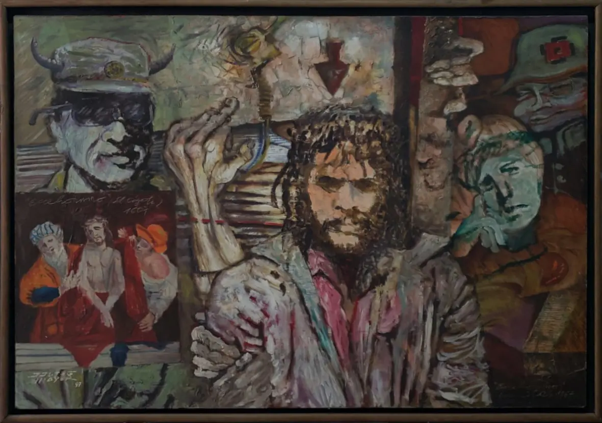
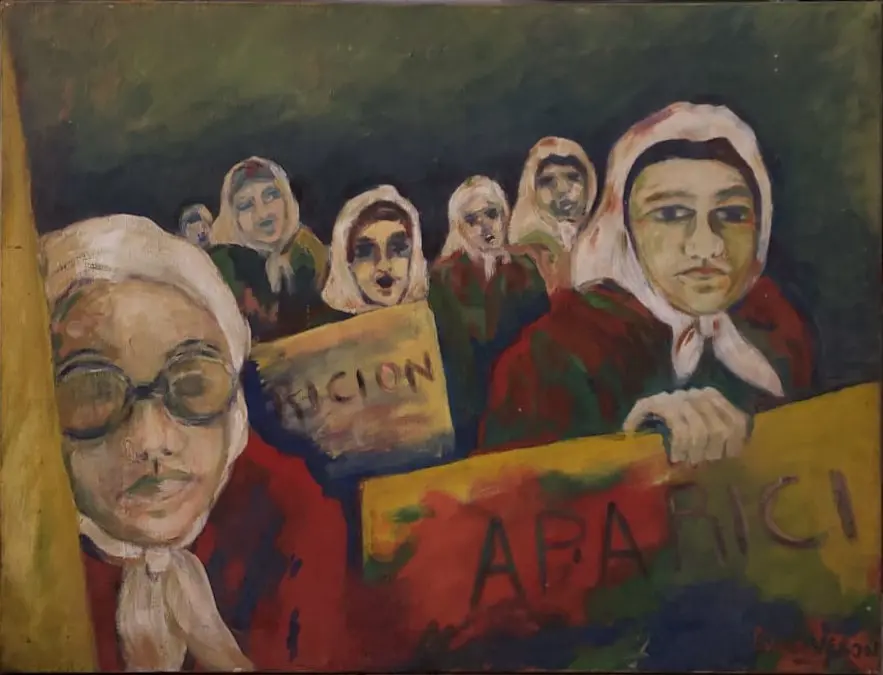
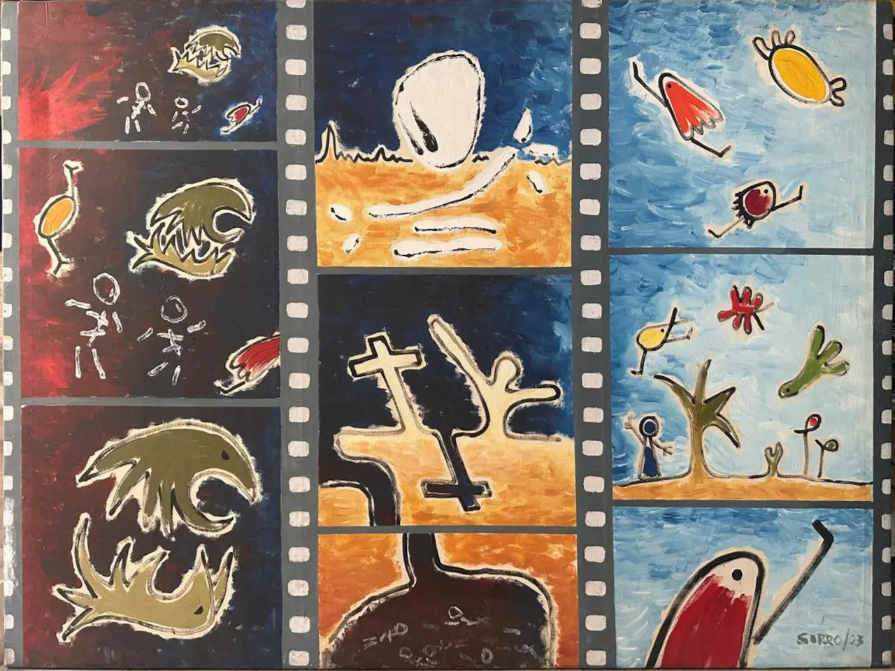
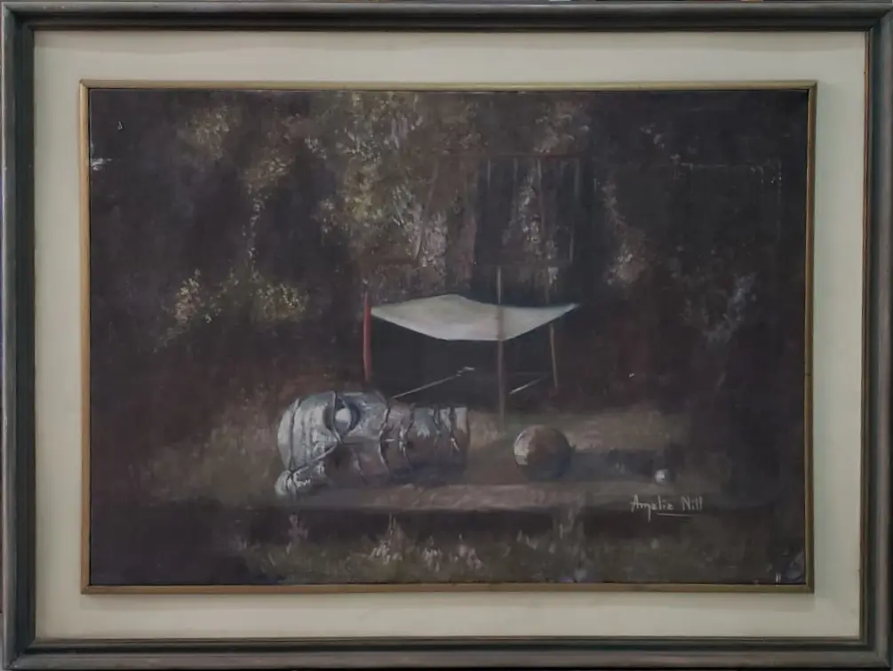
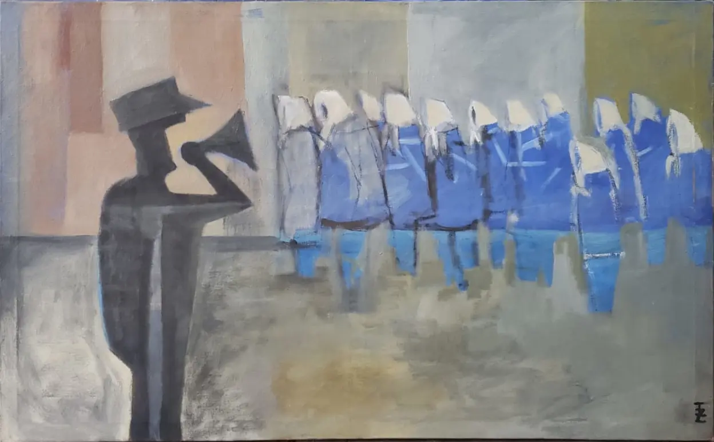
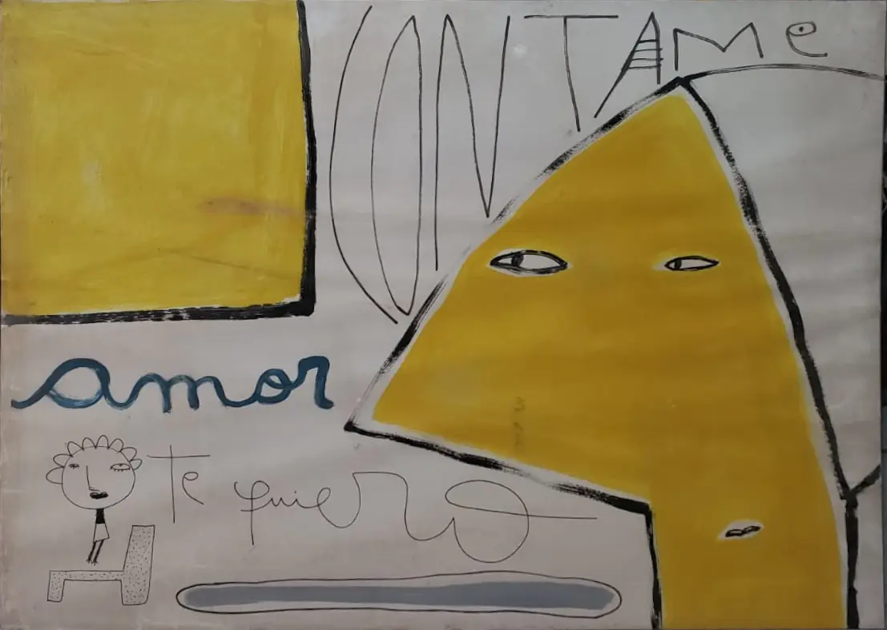

- Artista: Lucia Barón.
- Nombre de la Obra: Sin nombre.
- Detalles: Obra de arte que fue dada para esa primer muestra en el CPM.
- Medidas: 80cm x 60cm
- Material y Soporte: Óleo sobre tela.

- Artista: Sorro Adrían Sorrentino.
- Nombre de la Obra: «Margarita Belén más temprano que nunca florecerán los pichunguis»
- Detalles: El uso repetido de "pichunguis" ya es una firma característica y personal del artista en cuestión, una característica que es repetida en demás obras de su autoría, podría interpretarse como el "personaje" propio del autor.
- Medidas: 1.10m x 1.50m
- Material y Soporte: Acrilico sobre tela.

- Artista: Amalia Nill.
- Nombre de la Obra: «Jardines Olvidados»
- Medidas: 72cm x 50cm
- Material y Soporte: Acrilico sobre tela.

- Artista: Ignacio Sabalúa.
- Nombre de la Obra: «Abuelas en Lucha»
- Medidas: 80cm x 50cm
- Material y Soporte: Óleo sobre tela.

- Artista: Milo Lockett & Gustavo Galarza.
- Nombre de la Obra: Sin nombre.
- Detalles: La obra estuvo en peligro de perderse, anteriormente era parte de una colección de 6 piezas donde solo se lograron rescatar 3.
- Material y Soporte: Papel, acrílico y fibrón sobre papel.